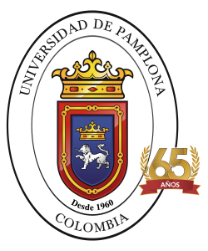
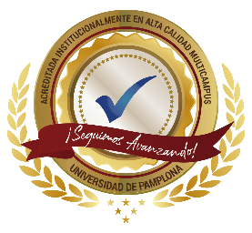
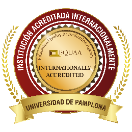
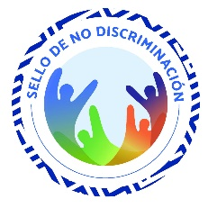

¡Bienvenidos a Aula Digital!
¡El aprendizaje también puede ser una aventura digital!
Experiencia 3D: cada planeta es un OVA. Arrastra para girar y toca uno para abrirlo.
Te damos la bienvenida a este espacio educativo, creado para explorar, aprender e interactuar con diferentes contenidos a través de los Objetos Virtuales de Aprendizaje (OVA).
Aquí encontrarás recursos educativos diseñados para fortalecer tus conocimientos en Lengua Castellana, mediante actividades interactivas, explicaciones, lecturas y experiencias que hacen del aprendizaje un proceso dinámico y significativo.
Nuestro propósito es acercar el conocimiento a través de la tecnología, despertando la curiosidad, la creatividad y la participación de los estudiantes.
¡Explora cada OVA, descubre nuevos conocimientos y aprende a tu propio ritmo!
Explorar OVA
OVA de CAMU
Acerca del proyecto
Objetivo general del sitio web
Integrar y presentar diferentes Objetos Virtuales de Aprendizaje (OVA) en un espacio web educativo, con el propósito de facilitar el acceso a recursos digitales e interactivos que fortalezcan los procesos de enseñanza y aprendizaje de la Lengua Castellana en los grados de básica primaria y secundaria.
Concepto de OVA
¿Qué son los Objetos Virtuales de Aprendizaje?
Los OVA son recursos educativos digitales diseñados con una intención pedagógica, que integran contenidos, actividades y herramientas interactivas para facilitar la comprensión de diferentes temas y fortalecer los procesos de enseñanza y aprendizaje.
¡EL CONOCIMIENTO COBRA VIDA EN EL MUNDO DIGITAL!
Créditos académicos
Proyecto elaborado por:
Estudiantes del curso de Lengua Castellana y Didáctica Virtual.
Docente orientadora:
Mag. María Marcela Rivera Corredor.
Contacto: [PROVISIONAL – dato pendiente de entrega]



